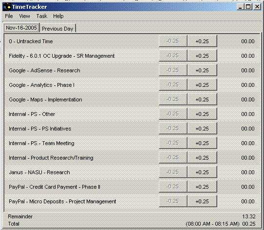
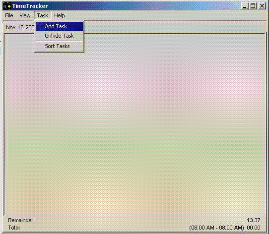

Why?
Time tracking is boring. Everyone talks about the value of it, but the employee never sees the value. It takes time away from doing what is really important, surfing the internet.
The average person tries to time track before going home each day. Still, when it's time to go home, the average person is much more likely to go home then to time track. Besides, I know I have trouble remembering that I did thirty minutes ago. I can't remember what I did the whole day!
The solution? A program that bugs you all the time to keep a running total on what you're doing. It needs to remind you to track time, but not take more than just a few seconds for it.
1. Installation
If you're seeing the help, you've done this. It probably involved copying it to a local location like your desktop and double-clicking it.
2. What is Everything?

Here is where I put a clever description of everything.
3. Adding Tasks
First thing, click on the Task menu and choose Add Task.

Hint: Add a task for "0 - Untracked Time" so you have somewhere to put all the time you don't want to report to your boss.
Add in all the tasks you want. They will sort alphabetically. You can use whatever task format you want, but my suggestion is something linke "Customer - Project - Task". It tends to sort nicely.
4. Annoyance
In the bottom right is a "Remainder" field. That covers the amount of time today you have not tracked. Whenever it gets above 0.25 (or 15 minutes) Timelord pops forward every minute until you track that time.